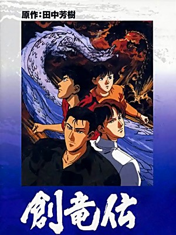

Sohryuuden

12 OAV de 45 min, 1991.
Aussi connue sous les titres de Legend of the Dragon Kings, Legend of the Four Kings, Souryuuden.
Les frères Ryudo semblent mener une vie normale dans leur grande maison.
Mais ils gardent un secret millénaire : leurs ancêtres étaient des dragons, et les immenses pouvoirs de ces aïeux légendaires pourraient bien se réveiller, sous l'impulsion d'une mystérieuses organisation qui ne recule devant rien pour étudier ceux qui, malgré eux, deviennent leurs cobayes.
Adaptée très librement du manga, notamment au niveau du design des personnages, Sohryuuden est une série un tantinet datée, à prendre impérativement au second degré de par son exagération qui touche parfois au gore, mais qui pourrait vous surprendre !